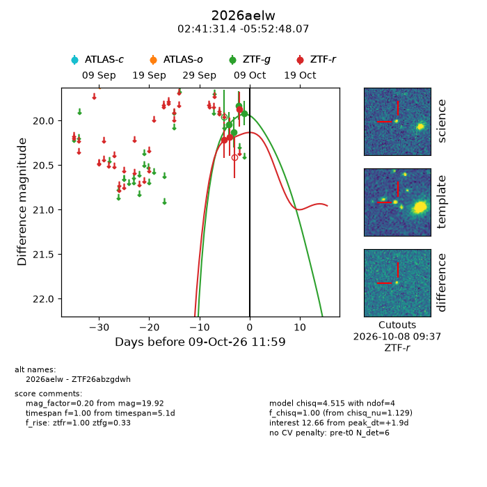
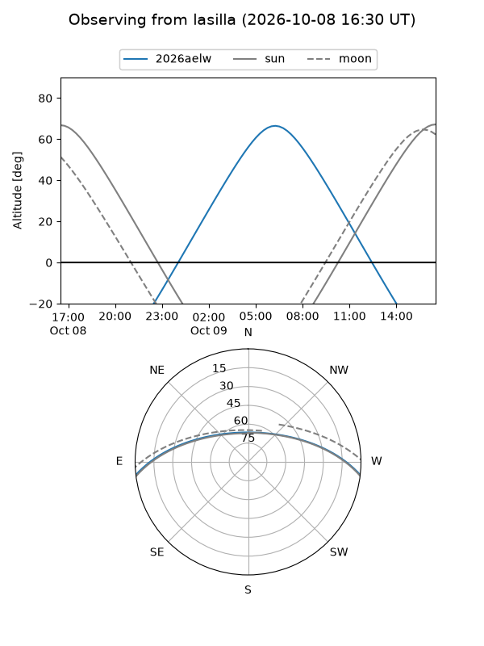
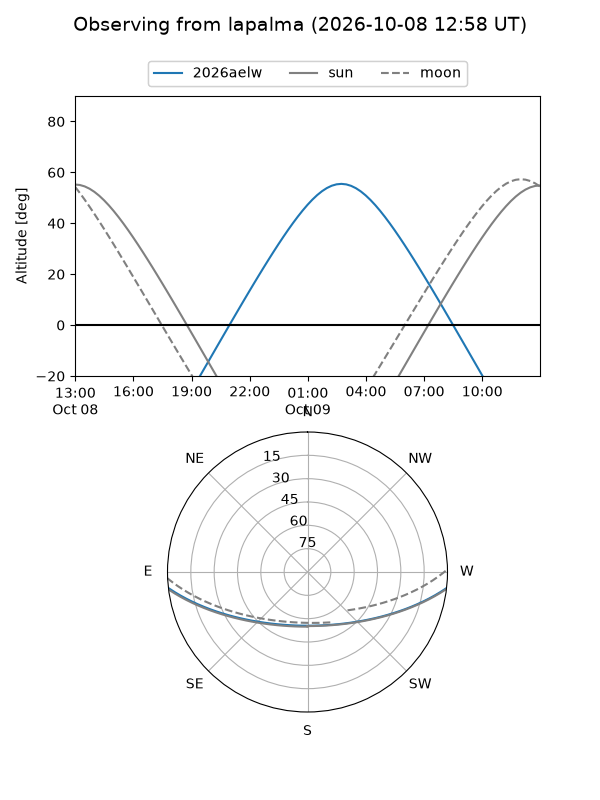
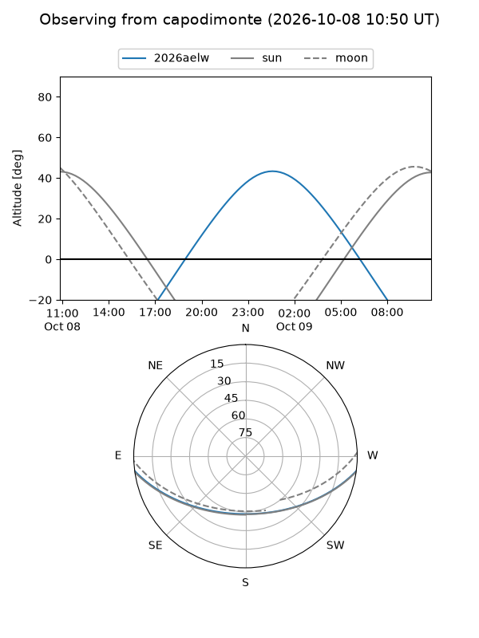
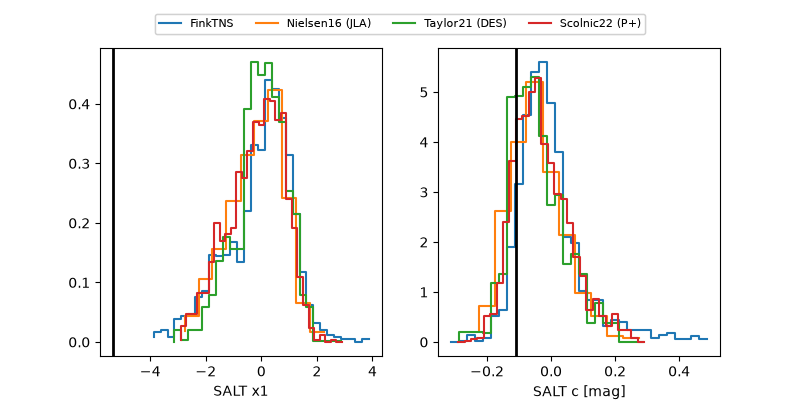

2026aelw
Target 2026aelw at 2026-10-09 12:01
Aliases and brokers:
FINK-ZTF: ztf.fink-portal.org/ZTF26abzgdwh
Lasair-ZTF: lasair-ztf.lsst.ac.uk/objects/ZTF26abzgdwh
ALeRCE-ZTF: alerce.online/object/ZTF26abzgdwh
YSE-PZ: ziggy.ucolick.org/yse/transient_detail/2026aelw
TNS name: wis-tns.org/object/2026aelw
Direct TNS query: direct search
alt names
ZTF26abzgdwh (ztf,fink_ztf)
2026aelw (tns,yse)
Coordinates:
equatorial (ra, dec) = 40.3808,-5.88002
equatorial (HMS+DMS) = 02:41:31.39,-05:52:48.07
galactic (l, b) = (178.8425,-56.28790)
Flags:
peak dt: +1.9
Photometry:
last ztfg=19.92, ztfr=19.87
4 ztfg, 3 ztfr detections
Lightcurve

Visibility



Additional plots
